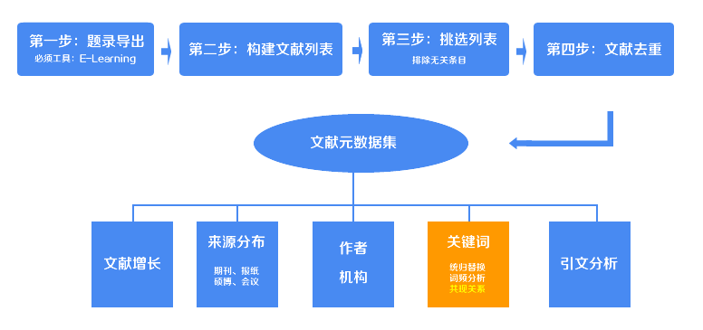
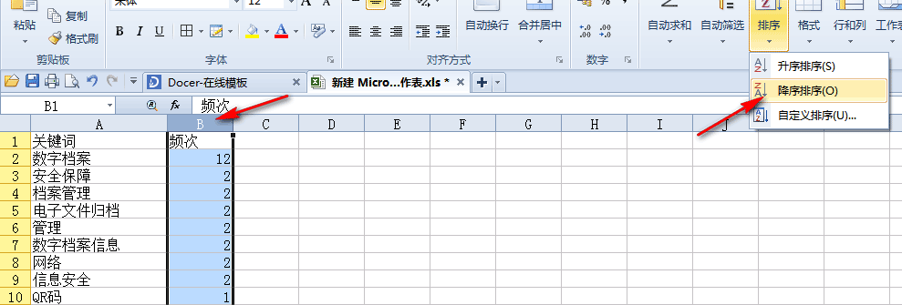
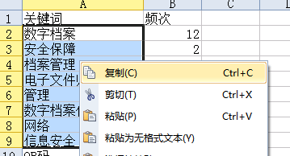
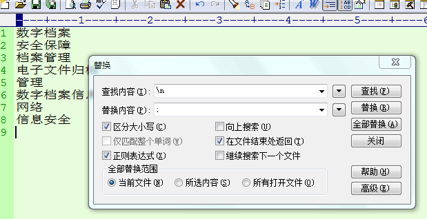
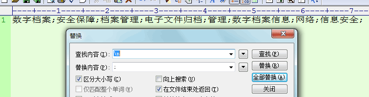
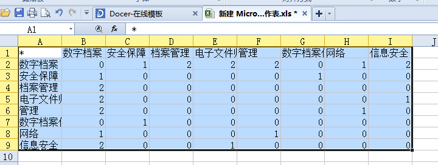

文献关键词矩阵构建工具

在关键词统计中，你已经获得了Excel格式的关键词列表，现在我们利用已经处理好的关键词进行排序和处理，最终获得关键词的共现关系，再利用ucnet对矩阵进行可视化，获得关键词共现关系图。
打开上述的Excel文件，对关键词按照频次进行降序排序（如图）。

一般来说，我们按照10%-20%的比例，挑选频次最高的关键词做共现分析。在表格中把这些高频词直接拷贝到一个txt文档中，（记住这些词的最小频次，例如你挑选的词是频次>=20的）使用替换功能，把它们处理成一行用“;”分隔的词组。（如图）



将上面这一行用“;”分隔的关键词组黏贴到下面的A文本框中。
重新打开上述Excel表格，直接拷贝“关键词”一列，黏贴到下面的B文本框中。
和之前你做的一样，你将得到一个经过统计好的txt文档（documents_meta_data_juzhen.txt），直接复制txt文档中的内容到一个excel中，利用ucnet来实现共现数据的图形化。

技巧：其实本工具不仅可以用来做文献关键词的共现矩阵，任何矩阵都可以用来尝试，例如作者的共现，只要在填写上面的AB两项时，按照这种格式来填写就可以了。